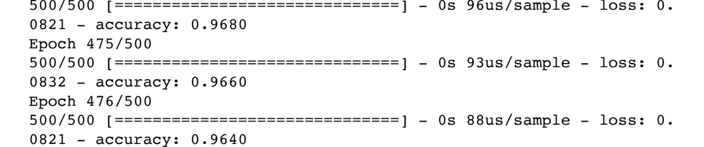

RED NEURONAL (CÁNCER DE MAMA)
Creación de Red Neuronal para identificar el cancer de mama maligno a partir de los casos clínicos del Dr. William H. Wolberg
Usando el conjunto de datos sobre cáncer de mama descargado del repositorio de aprendizaje automático de UCI presentado por el Dr. William H. Wolberg. El cual contiene 9 atributos que corresponden a la pruebas de diagnostico realizadas por el Dr. William a sus pacientes y 1 atributo destino el cual contiene si el cancer de mama es benigno o maligno.
El conjunto de datos descargado tenía 699 muestras originalmente. Dado que falta un atributo en 16 muestras, se eliminaron estas 16 muestras. Por lo tanto sólo hay 683 muestras. 500 ejemplos se utilizan como conjunto de datos de entrenamiento; el resto de 183 muestras se utilizarán como conjunto de datos de prueba para evaluar el rendimiento del modelo de red neuronal
Para la creación de la red neuronal se uso Keras que viene integrado en la biblioteca de Tensorflow. Esta red neuronal contiene 3 capas con las siguientes características:
Para la optimización se uso "Adam", una actualización del optimizador RMSProp (Root Mean Square Propagation) que se basa en un ratio de aprendizaje adaptativa. Para la función de coste se uso "Binary Cross-Entropy" (Entropía cruzada binaria). Y por ultimo para la función de evaluación se uso "accuracy", ésta mide el porcentaje de casos que el modelo ha acertado.
De la red neuronal obtenida con keras se observo que tiene una perdida de 0.0816 y un acierto del 96.8%.
Evaluando el conjunto de 183 registros de prueba se obtuvo 125 datos en donde el cancer era benigno y fue predicho como benigno, 2 datos que eran benignos fueron predichos como malignos. 0 datos los predijo como benignos cuando eran malignos y 56 datos que eran malignos los predijo como malignos.
Python: pandas, numpy, matplotlib, tensorflow, keras, sklearn